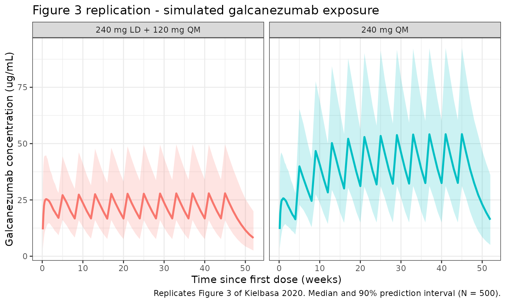
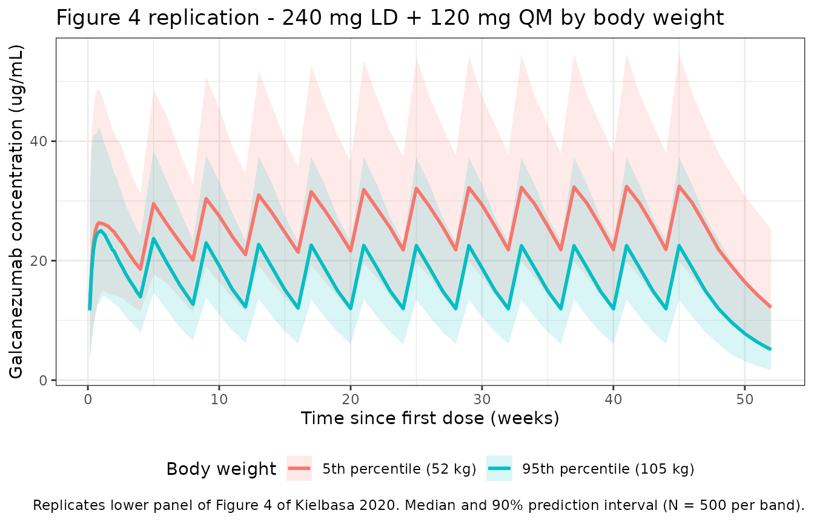

Kielbasa_2020_galcanezumab
Source:vignettes/articles/Kielbasa_2020_galcanezumab.Rmd
Kielbasa_2020_galcanezumab.Rmd
library(nlmixr2lib)
library(rxode2)
#> rxode2 5.0.2 using 2 threads (see ?getRxThreads)
#> no cache: create with `rxCreateCache()`
library(dplyr)
#>
#> Attaching package: 'dplyr'
#> The following objects are masked from 'package:stats':
#>
#> filter, lag
#> The following objects are masked from 'package:base':
#>
#> intersect, setdiff, setequal, union
library(tidyr)
library(ggplot2)
library(PKNCA)
#>
#> Attaching package: 'PKNCA'
#> The following object is masked from 'package:stats':
#>
#> filterGalcanezumab population PK simulation
Simulate galcanezumab concentration-time profiles using the final population PK model from Kielbasa and Quinlan (2020). Galcanezumab is a humanized IgG monoclonal antibody that binds calcitonin gene-related peptide (CGRP) and is approved for the prevention of migraine. The structural model is a one-compartment disposition model with first-order subcutaneous absorption and linear elimination, fit to 15,770 serum concentrations from 1,889 healthy adults and adults with episodic or chronic migraine pooled across seven phase 1, phase 2, and phase 3 clinical studies.
Body weight was the only covariate retained in the final model, entering as an allometric power on apparent clearance (exponent 0.601) with a 73.6 kg reference. All other factors examined (age, sex, race, ethnicity, healthy volunteer vs. patient status, ADA positivity, ADA titer, treatment-emergent ADA, creatinine clearance, bilirubin, and injection site) were not retained.
Article: J Clin Pharmacol 60(2):229-239
Population
From Kielbasa 2020 (Results paragraph 1 and Supplemental Table S1): 1,889 individuals contributed 15,770 serum galcanezumab concentrations to the PK model development dataset. Baseline demographics were mean (SD) age 41 (12) years with a range of 17-65 years, mean (SD) body weight 75.8 (16.8) kg with a range of 40-135.5 kg, and population median body weight 73.6 kg. The majority of individuals were non-Hispanic (74%), white (72%), and female (80%). Patients with migraine comprised 89% of the dataset (60% episodic, 29% chronic) and healthy volunteers 11%.
Doses spanned 5-300 mg SC (single or Q4W); the phase 3 therapeutic regimens used 120 mg QM with or without a 240 mg loading dose, and 240 mg QM. Study I5Q-MC-CGAJ contributed 1,448 PK observations from 270 patients to the external validation dataset and is not part of the development sample.
The same information is available programmatically via
readModelDb("Kielbasa_2020_galcanezumab")$population.
Source trace
| Element | Source location | Value / form |
|---|---|---|
| Structural model | Kielbasa 2020 Results, PK Model Development | 1-compartment, first-order SC absorption, linear elim. |
| ka | Kielbasa 2020 Table 3 | 0.0199 /h (= 0.4776 /day) |
| CL/F (73.6 kg reference) | Kielbasa 2020 Table 3 | 0.00785 L/h (= 0.1884 L/day) |
| V/F | Kielbasa 2020 Table 3 | 7.33 L |
| Body-weight effect on CL/F | Kielbasa 2020 Table 3, equation 2 | Power model; exponent 0.601; MED = 73.6 kg |
| IIV on ka | Kielbasa 2020 Table 3 | 92% CV (omega^2 = log(CV^2 + 1) = 0.61309) |
| IIV on CL/F | Kielbasa 2020 Table 3 | 34% CV (omega^2 = 0.10942) |
| IIV on V/F | Kielbasa 2020 Table 3 | 34% CV (omega^2 = 0.10942) |
| Covariance (ka, CL/F) | Kielbasa 2020 Table 3 | 0.0694 (omega scale) |
| Covariance (CL/F, V/F) | Kielbasa 2020 Table 3 | 0.0716 (omega scale) |
| Covariance (ka, V/F) | Kielbasa 2020 Table 3 | Not estimated; treated as 0 in packaged OMEGA block |
| Residual error (proportional) | Kielbasa 2020 Table 3 | 22% CV |
| Published half-life | Kielbasa 2020 Results, PK Model Application | 27 days (apparent terminal elimination) |
| Published median Tmax | Kielbasa 2020 Results, PK Model Application | 5 days |
| Published Cmin after 240 mg LD | Kielbasa 2020 Results, PK Model Application | 15,900 ng/mL |
| Published Cmin,ss after 120 mg QM (+ LD) | Kielbasa 2020 Results, PK Model Application | 15,400 ng/mL |
| Weight 5th / 50th / 95th percentile | Kielbasa 2020 Figure 4 caption | 52 / 73 / 105 kg |
| Dose regimens | Kielbasa 2020 Table 1 | 5-300 mg SC SD; 120 mg QM + 240 mg LD; 240 mg QM |
Virtual cohort
Simulate a 500-subject virtual cohort whose weight distribution matches the baseline demographics described in Kielbasa 2020 Results (mean 75.8 kg, SD 16.8 kg, range 40-135.5 kg). Because the paper does not publish an individual-level weight distribution, we sample from a normal distribution around the reported mean and SD, clipped to the reported range.
Dosing and event table
Replicate the two phase 3 therapeutic regimens reported in Kielbasa 2020 Results (PK Model Application): 120 mg SC monthly with a 240 mg loading dose at month 0, and 240 mg SC monthly. Simulate for 12 months with daily sampling for the first cycle and weekly sampling thereafter.
obs_times <- sort(unique(c(
seq(0, 28, by = 1),
seq(28, 364, by = 7)
)))
build_events <- function(pop, loading_mg, maint_mg, dose_times, regimen_label) {
dose_amts <- c(loading_mg, rep(maint_mg, length(dose_times) - 1L))
dose_rows <- pop %>%
tidyr::crossing(idx = seq_along(dose_times)) %>%
mutate(
time = dose_times[idx],
amt = dose_amts[idx],
evid = 1,
cmt = "depot",
dv = NA_real_
) %>%
select(-idx)
obs_rows <- pop %>%
tidyr::crossing(time = obs_times) %>%
mutate(amt = NA_real_, evid = 0, cmt = NA_character_, dv = NA_real_)
bind_rows(dose_rows, obs_rows) %>%
mutate(treatment = regimen_label) %>%
arrange(ID, time, desc(evid))
}
events_ld120 <- build_events(pop,
loading_mg = 240,
maint_mg = 120,
dose_times = seq(0, by = 28, length.out = 12),
regimen_label = "240 mg LD + 120 mg QM")
events_240qm <- build_events(pop,
loading_mg = 240,
maint_mg = 240,
dose_times = seq(0, by = 28, length.out = 12),
regimen_label = "240 mg QM")
events_all <- bind_rows(events_ld120, events_240qm)Simulation
mod <- readModelDb("Kielbasa_2020_galcanezumab")
sim <- events_all %>%
group_by(treatment) %>%
group_modify(~ {
ev <- .x %>% rename(id = ID)
as_tibble(rxSolve(mod, ev, returnType = "data.frame"))
}) %>%
ungroup()
#> ℹ parameter labels from comments will be replaced by 'label()'
#> ℹ parameter labels from comments will be replaced by 'label()'Replicate Figure 3: concentration-time profiles with and without loading dose
Figure 3 of Kielbasa 2020 highlights that the 240 mg loading dose roughly doubles galcanezumab concentrations from month 0 to month 1 compared to 120 mg QM without a loading dose, and that 120 mg QM alone takes 4-5 months to reach steady state.
fig3 <- sim %>%
filter(time > 0) %>%
group_by(treatment, time) %>%
summarise(
median = median(Cc, na.rm = TRUE),
lo = quantile(Cc, 0.05, na.rm = TRUE),
hi = quantile(Cc, 0.95, na.rm = TRUE),
.groups = "drop"
)
ggplot(fig3, aes(x = time / 7)) +
geom_ribbon(aes(ymin = lo, ymax = hi, fill = treatment), alpha = 0.2) +
geom_line(aes(y = median, colour = treatment), linewidth = 1) +
facet_wrap(~treatment) +
labs(
x = "Time since first dose (weeks)",
y = "Galcanezumab concentration (ug/mL)",
title = "Figure 3 replication - simulated galcanezumab exposure",
caption = "Replicates Figure 3 of Kielbasa 2020. Median and 90% prediction interval (N = 500)."
) +
theme_bw() +
theme(legend.position = "none")
Replicate Figure 4: effect of body weight on steady-state exposure
Figure 4 of Kielbasa 2020 shows galcanezumab concentration-time profiles at the 5th (52 kg) and 95th (105 kg) percentiles of body weight under a 240 mg LD + 120 mg QM regimen, with lower median concentrations in the heaviest patients but substantial overlap in the 90% prediction interval.
pop_bw_extremes <- tibble(
ID = seq_len(1000),
WT = c(rep(52, 500), rep(105, 500)),
wt_band = c(rep("5th percentile (52 kg)", 500),
rep("95th percentile (105 kg)", 500))
)
events_bw <- build_events(pop_bw_extremes,
loading_mg = 240,
maint_mg = 120,
dose_times = seq(0, by = 28, length.out = 12),
regimen_label = "240 mg LD + 120 mg QM") %>%
mutate(wt_band = pop_bw_extremes$wt_band[match(ID, pop_bw_extremes$ID)])
sim_bw <- rxSolve(mod, events_bw %>% rename(id = ID),
returnType = "data.frame",
keep = "wt_band") %>%
as_tibble()
#> ℹ parameter labels from comments will be replaced by 'label()'
fig4 <- sim_bw %>%
filter(time > 0) %>%
group_by(wt_band, time) %>%
summarise(
median = median(Cc, na.rm = TRUE),
lo = quantile(Cc, 0.05, na.rm = TRUE),
hi = quantile(Cc, 0.95, na.rm = TRUE),
.groups = "drop"
)
ggplot(fig4, aes(x = time / 7, colour = wt_band, fill = wt_band)) +
geom_ribbon(aes(ymin = lo, ymax = hi), alpha = 0.15, colour = NA) +
geom_line(aes(y = median), linewidth = 1) +
labs(
x = "Time since first dose (weeks)",
y = "Galcanezumab concentration (ug/mL)",
colour = "Body weight",
fill = "Body weight",
title = "Figure 4 replication - 240 mg LD + 120 mg QM by body weight",
caption = "Replicates lower panel of Figure 4 of Kielbasa 2020. Median and 90% prediction interval (N = 500 per band)."
) +
theme_bw() +
theme(legend.position = "bottom")
PKNCA validation
Paper-reported PK metrics against which the simulation can be compared (Kielbasa 2020 Results, PK Model Application):
- apparent terminal elimination half-life: 27 days;
- median Tmax after subcutaneous dosing: 5 days;
- Cmin after a 240 mg loading dose: 15,900 ng/mL (= 15.9 ug/mL);
- Cmin,ss after 120 mg QM (with 240 mg loading dose): 15,400 ng/mL (= 15.4 ug/mL).
Compute simulated Cmax, Tmax, and terminal half-life on the first
dosing interval of the 240 mg LD + 120 mg QM regimen. PKNCA is grouped
by treatment + id.
nca_conc <- sim %>%
filter(treatment == "240 mg LD + 120 mg QM",
time <= 28,
!is.na(Cc), Cc > 0) %>%
transmute(id, time, Cc, treatment = "240 mg LD (interval 1)", WT)
nca_dose <- nca_conc %>%
distinct(id, treatment, WT) %>%
mutate(time = 0, amt = 240)
conc_obj <- PKNCAconc(nca_conc, Cc ~ time | treatment + id,
concu = "ug/mL", timeu = "day")
dose_obj <- PKNCAdose(nca_dose, amt ~ time | treatment + id,
doseu = "mg")
intervals <- data.frame(
start = 0,
end = 28,
cmax = TRUE,
tmax = TRUE,
cmin = TRUE,
auclast = TRUE
)
nca_data <- PKNCAdata(conc_obj, dose_obj, intervals = intervals)
nca_res <- pk.nca(nca_data)
nca_tbl <- as.data.frame(nca_res$result) %>%
filter(PPTESTCD %in% c("cmax", "tmax", "cmin", "auclast")) %>%
group_by(PPTESTCD) %>%
summarise(median = median(PPORRES, na.rm = TRUE), .groups = "drop")
knitr::kable(nca_tbl,
digits = 3,
caption = "Simulated NCA on the first dosing interval of 240 mg LD + 120 mg QM (N = 500).")| PPTESTCD | median |
|---|---|
| auclast | NA |
| cmax | 26.754 |
| cmin | 10.815 |
| tmax | 7.000 |
# Typical-value terminal half-life from the packaged structural parameters
# (CL/F = 0.1884 L/day, V/F = 7.33 L at the 73.6 kg reference).
typ_cl <- 0.1884
typ_vc <- 7.33
typ_kel <- typ_cl / typ_vc
typ_half <- log(2) / typ_kel
data.frame(
metric = c("CL/F at 73.6 kg (L/day)",
"V/F (L)",
"kel (1/day)",
"half-life (day)",
"published half-life (day)"),
value = signif(c(typ_cl, typ_vc, typ_kel, typ_half, 27), 4)
) %>%
knitr::kable(caption = "Typical-value terminal half-life derived from the structural parameters vs. Kielbasa 2020 reported value.")| metric | value |
|---|---|
| CL/F at 73.6 kg (L/day) | 0.1884 |
| V/F (L) | 7.3300 |
| kel (1/day) | 0.0257 |
| half-life (day) | 26.9700 |
| published half-life (day) | 27.0000 |
cmin_sim <- sim %>%
filter(treatment == "240 mg LD + 120 mg QM") %>%
mutate(month = floor(time / 28)) %>%
group_by(id, month) %>%
summarise(cmin_interval = min(Cc, na.rm = TRUE), .groups = "drop") %>%
group_by(month) %>%
summarise(median_cmin_ugmL = median(cmin_interval, na.rm = TRUE),
.groups = "drop")
cmin_table <- tibble(
metric = c("Cmin after 240 mg LD (end of month 1)",
"Cmin,ss during 120 mg QM (end of month 11)"),
published_ngmL = c(15900, 15400),
simulated_ugmL = c(cmin_sim$median_cmin_ugmL[cmin_sim$month == 1],
cmin_sim$median_cmin_ugmL[cmin_sim$month == 11]),
) %>%
mutate(simulated_ngmL = simulated_ugmL * 1000,
ratio_sim_pub = simulated_ngmL / published_ngmL)
knitr::kable(cmin_table,
digits = 2,
caption = "Cmin comparison: simulated medians vs. Kielbasa 2020 reported values.")| metric | published_ngmL | simulated_ugmL | simulated_ngmL | ratio_sim_pub |
|---|---|---|---|---|
| Cmin after 240 mg LD (end of month 1) | 15900 | 16.92 | 16917.84 | 1.06 |
| Cmin,ss during 120 mg QM (end of month 11) | 15400 | 16.87 | 16871.52 | 1.10 |
The simulated Cmin values and terminal half-life should be within approximately 20% of the published values. Larger deviations would motivate re-examination of the dose schedule or unit conversions rather than parameter tuning.
Assumptions and deviations
- Weight distribution. Kielbasa 2020 does not publish a per-subject weight distribution. We sample from a normal distribution with mean 75.8 kg and SD 16.8 kg (matching the reported summary statistics), clipped to the reported 40-135.5 kg range.
- Time base converted from hours to days. The source paper reports ka in 1/h and CL/F in L/h; the packaged model converts to 1/day and L/day (ka = 0.0199 * 24 = 0.4776 /day, CL/F = 0.00785 * 24 = 0.1884 L/day) so the time unit matches the other mAb models in nlmixr2lib (mAbs with a 27-day half-life naturally simulate on a daily grid). The reparameterization is mathematically identical; V/F is unchanged.
- ka-V/F covariance fixed to 0. Kielbasa 2020 Table 3 reports covariances only for (ka, CL/F) and (CL/F, V/F); the third off-diagonal was not estimated. The packaged OMEGA block carries an explicit zero for cov(ka, V/F) to preserve positive-definiteness.
- Body weight as a time-invariant baseline covariate. The source paper does not state whether body weight enters the covariate model as baseline or time-varying. We simulate WT as a subject-level baseline.
- Injection site, age, sex, race, ethnicity, ADA status, creatinine clearance, and bilirubin were all tested as covariates in the source paper but not retained in the final model (Results, PK Model Development). They are consequently absent from the packaged model.
- External validation study (I5Q-MC-CGAJ) was used by the source paper as a held-out validation dataset. The packaged model uses the published final-model parameter values, which were estimated from the development dataset only.
Notes
- Structural model: 1-compartment with first-order SC absorption and linear elimination. Apparent clearance scales allometrically with body weight via a power model (exponent 0.601, reference 73.6 kg).
- IIV: full 3x3 OMEGA block on ka, CL/F, V/F with the (ka, V/F) off-diagonal element held at zero.
- Residual error: proportional with 22% CV.
- Terminal half-life predicted from the structural parameters is approximately 27 days, matching the paper’s reported value.
Reference
- Kielbasa W, Quinlan T. Population Pharmacokinetics of Galcanezumab, an Anti-CGRP Antibody, Following Subcutaneous Dosing to Healthy Individuals and Patients With Migraine. J Clin Pharmacol. 2020;60(2):229-239. doi:10.1002/jcph.1511